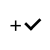

<!--
@license
Copyright (c) 2015 The Polymer Project Authors. All rights reserved.
This code may only be used under the BSD style license found at http://polymer.github.io/LICENSE.txt
The complete set of authors may be found at http://polymer.github.io/AUTHORS.txt
The complete set of contributors may be found at http://polymer.github.io/CONTRIBUTORS.txt
Code distributed by Google as part of the polymer project is also
subject to an additional IP rights grant found at http://polymer.github.io/PATENTS.txt
-->

<link rel="import" href="../../bower_components/polymer/polymer.html">
<link rel="import" href="../../bower_components/paper-toolbar/paper-toolbar.html">

<dom-module id="lo-peers">
  <style>
    :host {
      display: block;
          background-color: white;
          width: 100vw;
/*          max-width: 600px;
*/          height: 100vh;
/*          max-height: 600px;
*/    }

/*    .peers {
      background-color: white;
      height: 100%;
      width: 100%;
    }*/

    .addpeerbar {
      width: 100%;
      padding: 15px;
      height: 90px;
      background-color: transparent;
      @apply(--layout-horizontal);
      @apply(--layout-end-justified);
      box-sizing:border-box;

/*      border-bottom: 1px solid rgba(0,0,0,0.05);
*/    }

    .peerlist {
      overflow-y: scroll;
      height: 350px;
      width: 100%;
      @apply(--layout-vertical);
/*      background-color: rgba(120,180,122,0.05);*/
    }

    .peerlistitem {
      @apply(--layout-horizontal);
      @apply(--layout-start);
      padding: 20px;
      border-bottom: 1px solid rgba(0,0,0,0.05);
    }

    .peerlistitem h3 {
      color: var(--primary-darkgrey);
      font-family: OpensansLight;
      font-size: 14px;
      margin: 0px;
      padding: 0px;
    }


    .mainbtn {
      @apply(--layout-horizontal);
      @apply(--layout-center);
      height: 50px;
      border-radius: 5px;
      background-color: transparent;
      border: 1px solid rgba(0,0,0,0.1);
      outline: 0;
      padding: 0px 15px 0px 15px;

    }
    .backbtn {
      height: 50px;
      width: 50px;
      border: none;
      outline: none;
      background-color: transparent;
      color: white;
      font-size: 20px;
      font-weight: 100;
      padding: 10px;
    }

    .backbtn img {
      height: 100%;
      width: 100%;
    }

    .peersnr {
      width: 100%;
      height: 100%;
/*      border-radius: 50%;*/
      color: black;
/*      background-color: rgba(0,0,0,0.05);*/
      text-align: center;
      @apply(--layout-vertical);
      @apply(--layout-center);

    }

    .nr {
      @apply(--layout-horizontal);
      @apply(--layout-center-center);
      height: 60vh;
      width: 100%;
          }


    h1 {
        font-family: OpensansLight;
        color: #333333;
        font-size: 22px;
    }


    .mainbtn {
      height: 50px;
      min-height: 50px;
      width: 50px;
      min-height: 50px;
      border-radius: 50%;
      background-color: rgba(0,0,0,0.1);
      border: none;
      outline: 0;
      margin: 5px;
      padding: 0px;

    }
    .mainbtn img {
      margin: 0px;
      padding: 0px;
      width: 80%;
      height: 80%;
    }

  </style>
  <template>

    <div class="peers">

      <div class="addpeerbar">
        <button class="backbtn" on-tap="back">
          
        </button>

      </div>

      <div class="peersnr">
        <div class="nr">
          
          <h1><span>{{peers.length}}</span></h1>
        </div>

        <button class="mainbtn" on-tap="newpeer">
          
        </button> 

      </div>


<!--       <div class="peerlist">
        <tempate is="dom-repeat" items="{{peers}}" as="t" observer="{{peers.*}}">
          <div class="peerlistitem">
            <h3 class="flex">??<span>{{t.peer}}</span></h3>
            
          </div>

        </tempate>
      </div>
     -->
    </div>

  </template>
</dom-module>
<script>
(function() {
  Polymer({
    is: 'lo-peers',

    properties: {
      peers: {
        type: Array,
        notify: true,
        observer: "_peersLog"
      }
    },

    newpeer: function(){
      this.fire("new-peer");
      //this.fire("add-getuige");
    },

    _peersLog:function(){
      //console.log(JSON.stringify(this.peers));
    },

    back: function(){
      //console.log('Nou!');
      this.fire('go-back');

    }

  });
})();
</script>
